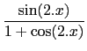

suivant: Transformer tan(x) avec cos(2x)
monter: Les expressions trigonométriques
précédent: Transformer cos(x) en sin(x)/tan(x)
Table des matières
Index
Transformer tan(x) avec sin(2x) et cos(2x) : tan2sincos2
tan2sincos2 a comme argument une expression trigonométrique.
tan2sincos2 transforme cette expression en remplaçant :
tan(x) par
.
On tape :
tan2sincos2(tan(x))
On obtient :
sin(2*x)/(1+cos(2*x))
Documentation de giac écrite par Renée De Graeve